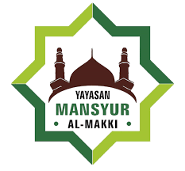
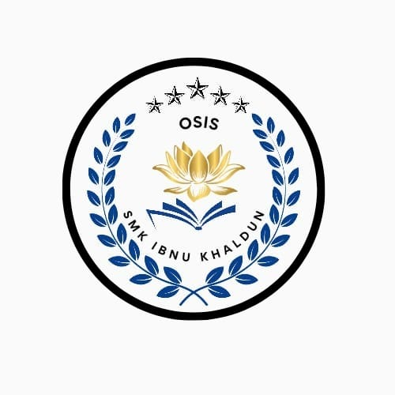
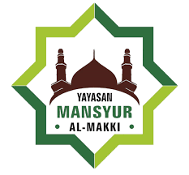
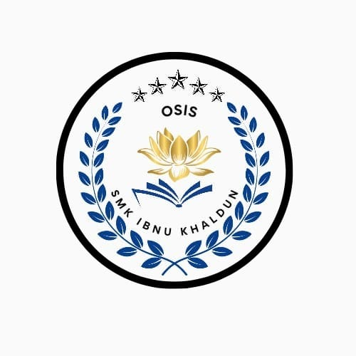

.png) 



OSIS SMK IBNU KHALDUN
Mewujudkan Generasi Emas yang Kreatif, Inovatif, dan Berkarakter Pancasila.
Lihat Program KamiDari Kepala Sekolah
Assalamu'alaikum Warahmatullahi Wabarakatuh. Saya sangat bangga dengan semangat dan inisiatif yang ditunjukkan oleh para pengurus OSIS. Teruslah berkarya, jadilah teladan, dan bawa nama baik sekolah kita ke tingkat yang lebih tinggi.
Bu. Ima Fatmawati, S.Pd.
Kepala Sekolah SMK Ibnu KhaldunDari Pembina OSIS
Menjadi pengurus OSIS adalah kesempatan emas untuk belajar kepemimpinan dan tanggung jawab. Manfaatkan platform ini untuk menyebarkan informasi positif dan menginspirasi seluruh siswa. Jangan pernah lelah untuk berinovasi.
Pak Dion Subidyo, S.Pd.
Pembina OSIS SMK Ibnu KhaldunStruktur Kepengurusan OSIS
Mengenal Para Pemimpin Muda SMK Ibnu Khaldun
ajril
Ketua OSISnafisa
Wakil Ketua OSISaulia
Sekretarisiswi
BendaharaProgram Kerja Unggulan
Inisiatif Kami untuk Kemajuan Sekolah
Pekan Kreativitas Siswa
Ajang tahunan untuk menampilkan bakat siswa di bidang seni, sains, dan olahraga.
Bakti Sosial & Lingkungan
Kegiatan peduli sesama dan lingkungan sekitar untuk menumbuhkan empati.
Seminar & Workshop
Mengundang para ahli untuk berbagi ilmu dan inspirasi kepada siswa.
Gerakan Literasi Sekolah
Meningkatkan minat baca dan tulis melalui berbagai program menarik.
Galeri Kegiatan
Momen-Momen Terbaik yang Terekam